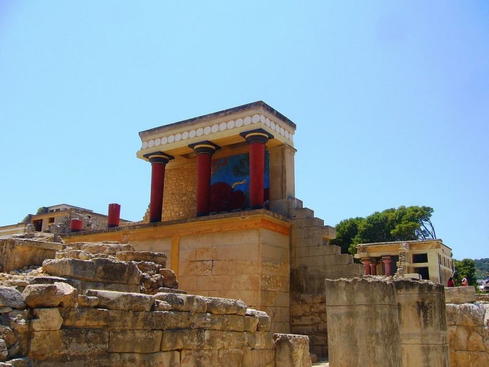
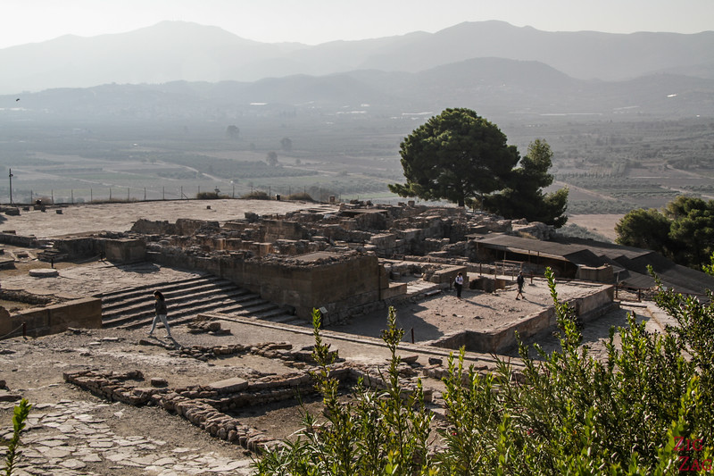
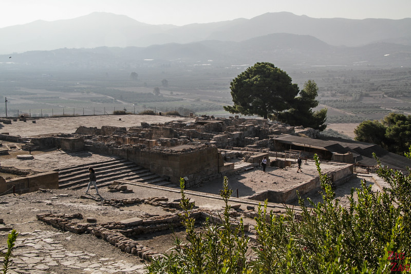

le Palais de Knossos
Grotte de Psychro


Fondée sous l’Antiquité, la ville d’Héraklion fut occupée par l’Empire Romain, l’Empire Byantin, les Arabes, les Vénitiens, l’Empire Ottoman, jusqu’à être intégrée dans l’État grec indépendant en 1913. Héraklion est également le premier port crétois, d’où affluent les navires de croisières depuis les Cyclades et Le Pirée d’Athènes. Jalonnée de nombreux sites archéologiques et monuments historiques, Héraklion est encore relativement préservée du tourisme de masse. Les alentours de la ville, entre les montagnes tapissées d’oliviers contrastent avec l’urbanisation incontrôlée du littoral nord.
L'une des caractéristiques les plus célèbres de la plage Matala sont les grottes creusées dans le mur nord de la baie. On ne sait pas qui a commencé à creuser des grottes (ou quand), mais on pense qu'il s'agissait plus tard de tombes romaines ou chrétiennes. Le calcaire de la falaise est tendre et assez facile à tailler. Vous pouvez en voir beaucoup jusqu'au sommet. Certaines sont plus récentes que d'autres. Apparemment, il y en a d'autres sous l'eau, mais je n'ai pas vérifié. Certaines d'entre elles ont des pièces et des escaliers, donc on pense aussi qu'elles ont pu être utilisés comme maisons à un moment de l'histoire, peut-être même dans le néolithique.

 

Réthymnon est non seulement la troisième plus grande ville de Crète et mais c’est également l’une des plus belles villes de Grèce. Située entre Héraklion à l’est (80 km) et La Canée/Chania à l’ouest (60 km), Réthymnon attire énormément de touristes pendant la période estivale. Avec une histoire de plus de 4500 ans et une identité culturelle forgée à travers les années minoenne, hellénistique, romaine et byzantine, cette ville a beaucoup d’histoires à raconter. La vieille ville avec ses ruelles colorées, son port vénitien, ses jolis hôtels et son large éventail de restaurants font de cette destination une destination idéale pour les vacances.